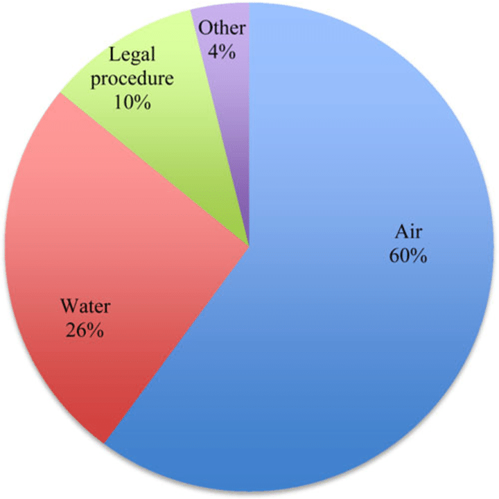
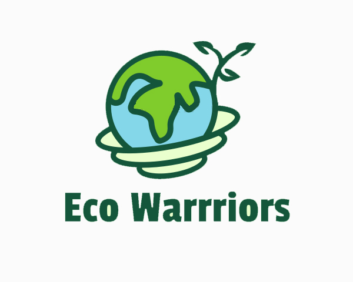
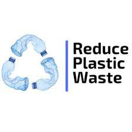
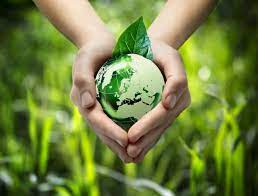

problem Pollution:
Indeed, water pollution is one of the most dangerous and life-threatening pollutions that has many harmful effects on humans and the environment. In fact, This also negatively impacts the economy, sustainability, and the development of the countries. As shown in the pie chart, it illustrates how water pollution represents a significant percentage of pollution. Mostly, it happens when water gets contaminated with harmful substances such as chemical or microorganisms substances. Unfortunately, human activities represent one of the most critical and primary resources of water pollution. Water pollution occurs due to many reasons; however, these are the most common ones:
Causes of water pollution:
1- Industry:
The industry represents one of the most critical water pollution sources that produce pollutants that are harmful to people and the environment. Many industrial facilitates use freshwater to carry waste from plants into lakes, rivers, and oceans. This industrial waste which makes the temperature rises, reduce the oxygen in the water
2- Agriculture wastes:
A significant source of pollution is the discharge of domestic, agricultural wastes and excessive use of pesticides and fertilizers. It plays a significant role in the water Industry.
Farms discharge large quantities of organic matter, drug residents, and saline drainage into water bodies. Excessive irrigation can affect water quality by causing erosion and transporting nutrients.
As shown in figure 1, according to the recent report by the world health organization.
It confirmed that 38 million people drink contaminated water in Egypt
Negative Impacts of water pollution on humans and the environment:
1. Diseases:
Many diseases can be caused due to water pollutions, such as sensitivity, inability to breathe, feeling suffocated, and skin diseases, which are examples of diseases by water pollution.
2. Plant poisoning:
When seeds of plants get contaminated with chemical pollutants found in the soil from marine environments, it leads to plant poisoning due to these toxic substances that can be transmitted to other organisms.
3. Harm effects on sea life:
Due to water pollution, there are many negative and harmful impacts on ocean life. Specifically, it harmfully impacts the life of marine organisms. Indeed, this will lead to poisoning and then death. Further, all organisms all over the world will lose die losing their most important wealth.
4. Sewage:
Sewage, a wastewater containing urine, faeces, and laundry waste, harshly contaminates the environment and causes many diseases like diarrhea. Also, it carries dangerous viruses and bacteria into the environment causing many health problems. Consequently, it represents one of the most dangerous water pollution resources that must be treated.
5. Mining activities:
Mining in many ways can cause water pollution that harmfully affects the environment. For example, metal contamination, acid mine drainage, and increased streams’ sediment levels represent some of the most common ways Mining can cause water pollution. Moreover, Mining can induce loss of biodiversity, soil erosion, contamination of surface water, groundwater, and soil, and so on, causing pollution.


How to stop water polution
Some general ways to prevent water pollution
Plastic Waste Reduction Plastics are commonly washed into the ocean and other bodies of water, which only serves to degrade the quality of the water.Along with water bottles, plastic is used in a myriad of different items that people use on an everyday basis, which include everything from clothes to various items around the home. To help reduce the amount of plastic waste that gets cycled into the environment, it’s recommended that you avoid using plastics whenever possible. Seek alternatives for plastic bottles, plastic utensils, and straws. Whenever you use plastic, make sure that you recycle.

Water conservationIf you want to do your part to keep water clean and pure in a manner that will protect the environment, it’s important that you focus on water conservation when possible.

Green AgricultureThe agricultural sector uses upwards of 70 percent of the surface water supplies around the earth for everything from livestock production to farming. Unfortunately, agriculture is the primary cause of water pollution. Whenever it rains, the pesticides and fertilizes wash away with the stormwater, which takes viruses and bacteria into the waterways. It’s possible, however, for agriculture to be more friendly to the environment.
To foster the use of green agriculture, consider planting trees and other plants nearby bodies of water, which will keep chemicals from being washed away when it rains. You should also avoid using pesticides that contain harmful chemicals.

Wastewater Treatment Likely the most effective way to reduce water pollution is by treating some of the water before it’s reintroduced into the waterways. This is a highly effective solution because wastewater treatment facilities are able to remove nearly all pollutants in wastewater via a chemical, physical, or biological process. Sewage will be taken through several chambers of the facility to slowly reduce its toxicity levels.
.jpg)